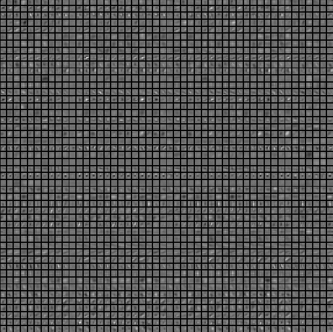
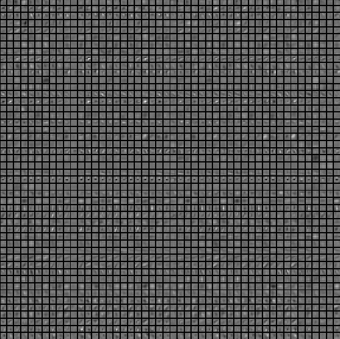

(this page is currently in draft form)
Visualizing what ConvNets learn
Several approaches for understanding and visualizing Convolutional Networks have been developed in the literature, partly as a response the common criticism that the learned features in a Neural Network are not interpretable. In this section we briefly survey some of these approaches and related work.
Visualizing the activations and first-layer weights
Layer Activations. The most straight-forward visualization technique is to show the activations of the network during the forward pass. For ReLU networks, the activations usually start out looking relatively blobby and dense, but as the training progresses the activations usually become more sparse and localized. One dangerous pitfall that can be easily noticed with this visualization is that some activation maps may be all zero for many different inputs, which can indicate dead filters, and can be a symptom of high learning rates.

Conv/FC Filters. The second common strategy is to visualize the weights. These are usually most interpretable on the first CONV layer which is looking directly at the raw pixel data, but it is possible to also show the filter weights deeper in the network. The weights are useful to visualize because well-trained networks usually display nice and smooth filters without any noisy patterns. Noisy patterns can be an indicator of a network that hasn't been trained for long enough, or possibly a very low regularization strength that may have led to overfitting.
 

Retrieving images that maximally activate a neuron
Another visualization technique is to take a large dataset of images, feed them through the network and keep track of which images maximally activate some neuron. We can then visualize the images to get an understanding of what the neuron is looking for in its receptive field. One such visualization (among others) is shown in Rich feature hierarchies for accurate object detection and semantic segmentation by Ross Girshick et al.:

One problem with this approach is that ReLU neurons do not necessarily have any semantic meaning by themselves. Rather, it is more appropriate to think of multiple ReLU neurons as the basis vectors of some space that represents in image patches. In other words, the visualization is showing the patches at the edge of the cloud of representations, along the (arbitrary) axes that correspond to the filter weights. This can also be seen by the fact that neurons in a ConvNet operate linearly over the input space, so any arbitrary rotation of that space is a no-op. This point was further argued in Intriguing properties of neural networks by Szegedy et al., where they perform a similar visualization along aribtrary directions in the representation space.
Embedding the codes with t-SNE
ConvNets can be interpreted as gradually transforming the images into a representation in which the classes are separable by a linear classifier. We can get a rough idea about the topology of this space by embedding images into two dimensions so that their low-dimensional representation has approximately equal distances than their high-dimensional representation. There are many embedding methods that have been developed with the intuition of embedding high-dimensional vectors in a low-dimensional space while preserving the pairwise distances of the points. Among these, t-SNE is one of the best-known methods that consistently produces visually-pleasing results.
To produce an embedding, we can take a set of images and use the ConvNet to extract the CNN codes (e.g. in AlexNet the 4096-dimensional vector right before the classifier, and crucially, including the ReLU non-linearity). We can then plug these into t-SNE and get 2-dimensional vector for each image. The corresponding images can them be visualized in a grid:
Occluding parts of the image
Suppose that a ConvNet classifies an image as a dog. How can we be certain that it's actually picking up on the dog in the image as opposed to some contextual cues from the background or some other miscellaneous object? One way of investigating which part of the image some classification prediction is coming from is by plotting the probability of the class of interest (e.g. dog class) as a function of the position of an occluder object. That is, we iterate over regions of the image, set a patch of the image to be all zero, and look at the probability of the class. We can visualize the probability as a 2-dimensional heat map. This approach has been used in Matthew Zeiler's Visualizing and Understanding Convolutional Networks:

Visualizing the data gradient and friends
Data Gradient.
Deep Inside Convolutional Networks: Visualising Image Classification Models and Saliency Maps
DeconvNet.
Visualizing and Understanding Convolutional Networks
Guided Backpropagation.
Striving for Simplicity: The All Convolutional Net
Reconstructing original images based on CNN Codes
Understanding Deep Image Representations by Inverting Them
How much spatial information is preserved?
Do ConvNets Learn Correspondence? (tldr: yes)
Plotting performance as a function of image attributes
ImageNet Large Scale Visual Recognition Challenge
Fooling ConvNets
Explaining and Harnessing Adversarial Examples